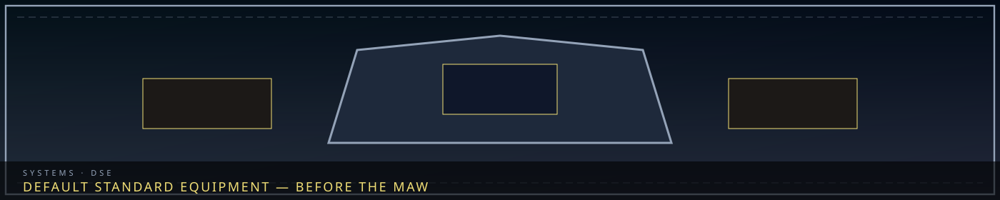

/// RAPID JUMP:
STATUS: ARCHIVE VERIFIED |
CLEARANCE: LEVEL-4 OVERSIGHT |
PROTOCOL: REVERIE DIRECTORATE
ARTICLE
DISCUSSION
SOURCE
HISTORY
YEAR 4,238 · DAWN OF HOPE
SYSTEMS & MECHANICS RECORD
Default Standard Equipment & Uniforms
CANONICAL RECORD: Sourced directly from the official Project Somnarak Worldbuilding Codex.
CANONICAL CROSS-LINKS & ATLAS CONNECTIONS
“You do not start in extracted sorrow. You start in issued plate.”

Default Equipment — R.D. Standard Issue
Overview
"Not everyone gets M.A.W. But everyone gets something."
Every R.D. personnel member receives manufactured standard equipment. The kit is made from refined Han-crystal and conventional materials. It does not imply an entity bond and does not become an Echo-Core's personal signature equipment merely because a department grants access to it. Manufactured items may receive an M.A.W.-equivalent output or armor rating without becoming entity-extracted M.A.W.
Numeric Convention
The following test values use the compact notation applied throughout R.D. combat and equipment records:
| Scale | Meaning |
|---|---|
| Damage | Abstract combat-output points before target resistance |
| Resistance multiplier | Damage Received = Base Damage × Resistance Multiplier |
| 0.8× — Endured | Partial damage reduction; the target receives 80% of the affected element |
| α — Minor / weak output | The lowest registered power band; normally 3–6 direct damage |
| Speed 1 | Slow |
| Speed 2 | Normal |
| Speed 3 | Fast |
| Range 1 | Contact / personal reach |
| Range 2 | Short |
| Range 3 | Medium |
| Range 4 | Long |
| Range 5 | Room-scale coverage |
| 100% → 70% → 50% | Standard multi-target falloff where an item explicitly uses Pierce or AoE; never assumed for single-target tools |
Tool ratings are operational baselines, not evidence that every item is a weapon. Situational attribute bonuses modify only the named check and do not permanently raise a person's Profile score.
Standard Issue Kit
| Item | Type | Grade | Element | Primary Numeric Baseline |
|---|---|---|---|---|
| The Sorrow Rod | Weapon — staff | α — Minor | Weight (Black) | 3–6 direct; Speed 2; Range 1 |
| The Veil Vest | M.A.W.-equivalent manufactured armor — vest | α — Minor | Void (Pale White) | 0.8× Lament / Grudge / Void / Weight against α-grade weak output; 10% ambient-Han reduction; up to 3-minute Fracture delay |
| The Echo Compass | Handheld sensor | α — Minor | Void (Pale White) | 50-meter detection radius; 2-second refresh |
| The Sorrow Gauge | Wrist sensor | α — Minor | Weight (Black) | 0–100% readings; 10-meter linked-entity radius; 1-second refresh |
| The Memory Anchor | Grounding pendant | α — Minor | Lament (Deep Blue) | +10 situational Clarity for identity, Dream/reality, and memory-theft checks |
| The Fracture Whistle | Emergency tool | α — Minor | Grudge (Crimson) | 10-meter radius; up to 3-minute delay; 60-second recovery |
The Sorrow Rod (한의 막대 — Han-ui Makdae)
Appearance: A 1.2-meter reinforced Han-crystal staff. It is dark, warm to the touch, and faintly resonant near Sorrow Entities.
| Field | Standard-Issue Value |
|---|---|
| Classification | Manufactured weapon; not M.A.W. |
| Grade | α — Minor |
| Element | Weight — Black |
| Basic damage | 3–6 Weight direct |
| Speed | 2 — Normal |
| Range | 1 — Contact |
| Pattern | Single target; impact |
| Han Pulse | 2 Weight, Range 2 short cone, pushes unsecured minor targets up to 2 meters |
| Pulse coverage | Up to 3 targets; standard 100% → 70% → 50% falloff |
| Pulse recovery | 12 seconds |
| Internal capacity | 6 pulses before conduit recharge |
| Full recharge | 15 minutes at an R.D. Han-conduit |
Limits: Low output, breakable construction, finite charge, and insufficient force for powerful entities without trained-team support.
The Veil Vest (베일 조끼 — Beil Jokki)
Appearance: A lightweight dark-grey vest of Han-woven fabric with faint crystalline patterns. Four small resistance marks sit beneath the collar: Deep Blue, Crimson, Pale White, and Black.
| Field | Standard-Issue Value |
|---|---|
| Classification | M.A.W.-equivalent manufactured armor; rated through the M.A.W. armor resistance system but not extracted from an entity |
| Armor equivalence | α — Minor M.A.W. armor |
| Element | Void — Pale White |
| Protected power band | α — Minor / weak-output attacks only |
| Resistance formula | Damage Received = Base Damage × Resistance Multiplier |
| Ambient-Han reduction | 10% under low-to-moderate exposure |
| Mundane impact reduction | 2 points per hit, minimum 0; applies to ordinary cuts and impacts only |
| Fracture delay | Up to 3 minutes under early-stage exposure |
| Coverage | Torso only |
| Speed penalty | None under ordinary use |
Four-Element Resistance — Weak Output
| Element | Multiplier vs α — Minor | Rating | Example |
|---|---|---|---|
| Lament — Deep Blue | 0.8× | Endured | 5 Lament → 4 received |
| Grudge — Crimson | 0.8× | Endured | 5 Grudge → 4 received |
| Void — Pale White | 0.8× | Endured | 5 Void → 4 received |
| Weight — Black | 0.8× | Endured | 5 Weight → 4 received |
The four-element profile applies to direct or Tick damage only when the incoming effect is rated α — Minor. At β — Moderate or higher, the standard Veil Vest provides 1.0× — Normal resistance unless a separate barrier, upgrade, or recorded effect changes that value.
The 10% ambient-Han reduction is an exposure rule and is not multiplied again onto the same direct attack after the 0.8× armor resistance has been applied.
Limits: The vest does not cure Fracture, does not resist β-grade or stronger attacks beyond the normal 1.0× value, and must be replaced after Han saturation, torn fabric, or a fractured resistance mark.
The Echo Compass (메아리 나침반 — Meori Nachimban)
Appearance: A palm-sized dark Han-crystal instrument whose needle follows nearby flow lines.
| Field | Standard-Issue Value |
|---|---|
| Classification | Manufactured sensor; not M.A.W. |
| Grade | α — Minor |
| Element | Void — Pale White |
| Detection radius | 50 meters maximum |
| Refresh interval | 2 seconds |
| Outputs | Direction, relative strength, entity-presence alert, and three depth bands: surface / mid-level / deep |
| Identification | Presence only; no entity type at Mk.I |
| Heavy-Han behavior | Direction and strength become unreliable; the device must display interference rather than a false precise answer |
The Sorrow Gauge (한 게이지 — Han Geiji)
Appearance: A wrist-mounted dark crystal display, warm while sampling.
| Field | Standard-Issue Value |
|---|---|
| Classification | Manufactured monitor; not M.A.W. |
| Grade | α — Minor |
| Element | Weight — Black |
| Local Han scale | 0–100% |
| Personal exposure scale | 0–100% |
| Linked contained-entity radius | 10 meters |
| Refresh interval | 1 second |
| History | Current reading only at Mk.I |
| Prediction | None; a high present value is not a guaranteed breach forecast |
The Memory Anchor (기억 닻 — Gieuk Dat)
Appearance: A small pendant holding one crystallized identity-memory.
| Field | Standard-Issue Value |
|---|---|
| Classification | Manufactured grounding accessory; not M.A.W. |
| Grade | α — Minor |
| Element | Lament — Deep Blue |
| User coverage | One bonded wearer |
| Stored imprint | One verified identity-memory |
| Situational effect | +10 Clarity for identity grounding, Dream/reality distinction, and resistance to memory theft |
| Base-score effect | None; the wearer's Profile Clarity does not permanently change |
| Refresh condition | After severe memory impact, visible fading, ownership transfer, or routine 30-day inspection |
Limits: It does not restore a deleted memory, overpower a high-output Void attack, or guarantee accurate recall.
The Fracture Whistle (파열 휘파람 — Payeol Hwiparam)
Appearance: A small dark-crystal whistle that vibrates before activation.
| Field | Standard-Issue Value |
|---|---|
| Classification | Manufactured emergency tool; not M.A.W. |
| Grade | α — Minor |
| Element | Grudge — Crimson |
| Damage | 0 |
| Effective radius | 10 meters |
| Fracture delay | Up to 3 minutes for early-stage progression while evacuation begins |
| Recovery | 60 seconds between effective calls |
| Entity effect | Agitates or drives back only minor entities; no guaranteed effect on higher-potency targets |
| Signal use | Audible emergency marker; walls and Han interference reduce practical distance |
Limits: Delay is not treatment. Repeated calls do not stack the three-minute ceiling.
Default Equipment by Role — Measured Baselines
Each role receives the complete standard kit plus one role device. These are departmental issue, not automatic personal signature items for the commanding Echo-Core.
| Role | Additional Device | Numeric Baseline | Limits |
|---|---|---|---|
| Containment Guard | Containment Badge | 5-meter suppression field; +10 Composure for de-escalation checks against α–β entities | No damage; overload after 60 seconds continuous use; ineffective against sovereign output |
| Extraction Technician | Resonance Scanner | 2-meter scan range; 15-second scan; 0–100 compatibility output | Measures compatibility, not consent or guaranteed bonding success |
| Research Analyst | Han Analyzer | 20-meter detailed sample range; 10-second sample cycle; stores 100 records | Heavy Han and mixed signatures require manual interpretation |
| Border Guard | Border Shield | 5 Weight reduction against one frontal hit; Speed 1 to deploy; personal coverage | No rear coverage; three high-output impacts require inspection |
| Field Agent | Shadow Cloak | +10 situational difficulty to visual/Han detection for 20 minutes; 10-minute recovery | Movement, attacks, bright Han, or close inspection can reveal the user |
| Gate Observer | Gate Lens | ×20 optical magnification; 1-second Han-boundary refresh; fixed line of sight to the Gate | Cannot reverse, open, command, or interpret the Gate without personnel analysis |
M.A.W. Upgrade Path
| Level | Equipment | Source | Classification Limit |
|---|---|---|---|
| Standard | Default Kit | Manufactured | Never M.A.W. |
| Field-Issue | Upgraded Kit | Refined Han-crystal + controlled minor resonance | Still manufactured equipment |
| M.A.W. | Entity-extracted equipment | Sorrow Entity extraction | Requires registry, compatibility, and risk record |
| Personal M.A.W. | Bonded equipment | Deep resonance with a specific entity | Not transferable as ordinary inventory |
Field-Issue examples: Sorrow Rod Mk.II, Veil Vest Mk.II, Echo Compass Mk.II, Sorrow Gauge Mk.II, Memory Anchor Mk.II, and Fracture Whistle Mk.II. Mk.II status must not be assigned without a specific issue record.